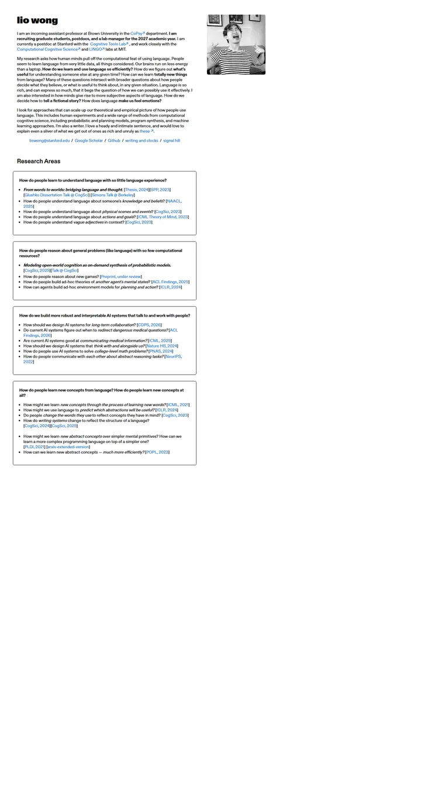

Lionel (Lio) Wong
A Swiss-grotesk index card pinned to the left edge: a squat black wordmark, a grainy black-and-white portrait hung in the margin, and research questions boxed in thin black frames.

Checked against the rendered page. Left-aligned on all widths; the portrait's -250px margin overflows below about 910px viewport. No nav or footer.
Why it is here
Adds a different style. The heavy grotesque name, black-and-white portrait, and research organized as boxed question cards with inline citation links offer a useful alternative to a publication list.
Overview
Color Palette
Typography
ABC Gravity
Lionel (Lio) Wong, computational cognitive science / language and thou
Abstract · Method · Results · BibTeX — 0123456789
ABC Diatype
Lionel (Lio) Wong, computational cognitive science / language and thou
Abstract · Method · Results · BibTeX — 0123456789
Spacing & Shape
Page Modules
Guidelines
More like this

Anagh Malik
The Barron table, warmed with apricot: Lato at 14px, blue links that flash orange, and the papers that matter sitting in a band of late-afternoon light.

Nikhila Ravi
A developer's zine on off-white paper: everything in IBM Plex Mono, emoji for signposts, blue links on dashed underlines.

Amir Bar
A clean faculty prospectus in Imperial blue: Inter on white, pill links, and paper cards that lift a few pixels when you reach for them.

Christoph Feichtenhofer
A conference-hall banner in Facebook blue, then a long ledger of papers in red ink, green venues and justified grey abstracts.

David B. Lindell
A lab notebook typeset by a careful editor: Source Serif prose, Source Sans labels, one clear blue, and every paper filed with its photograph.

David Novotny
A harbour at dusk beside a quiet reading room: a fixed teal-to-midnight panel with right-aligned contact lines, and soft grey text with tangerine links on white.